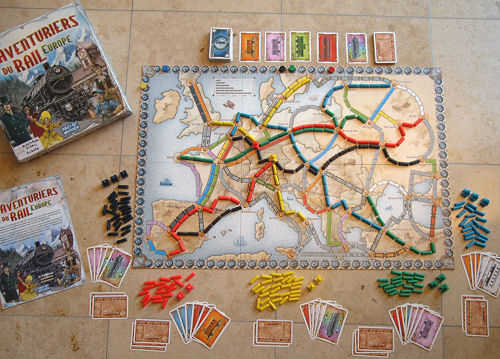

Les Aventuriers du Rail – Partie 1
Contexte du Projet
Ce projet a été réalisé dans le cadre des Situations d'Apprentissage et d'Évaluation (SAE) S2.01 et S2.02 du BUT Informatique. L'objectif était de développer une version en ligne du célèbre jeu de plateau Les Aventuriers du Rail. Nous avons travaillé en binôme en respectant une méthodologie de développement incrémentale en trois phases :
- Phase 1 : Développement de la mécanique du jeu en Java.
- Phase 2 : Implémentation des algorithmes de graphes.
- Phase 3 : Création d'une interface graphique avec JavaFX.
Méthodes de Travail et Résultats
Pour mener à bien ce projet, nous avons utilisé :
- GitLab pour la gestion de version et la collaboration.
- JUnit pour les tests unitaires.
- JavaFX pour l'interface graphique.
Résultats obtenus
- Un moteur de jeu respectant les règles officielles.
- Une interface graphique intuitive permettant de visualiser les actions des joueurs.
- Un système de tests unitaires validant la robustesse du code.
Preuves Visuelles



Technologies Utilisées
- Java pour le développement backend.
- HTML pour le développement frontend
- JUnit pour les tests unitaires.
- GitLab pour la gestion du code source.
Compétences Mobilisées
- C1 : Réaliser un développement d'application
- Développement orienté objet avec Java.
- Implémentation d'algorithmes de graphes pour optimiser le jeu.
- C2 : Optimiser des applications
- Analyse et amélioration des performances de l'application.
- C5 : Conduire un projet
- Organisation des tâches et respect des échéances.
- Suivi et validation des fonctionnalités via des tests unitaires.
- C6 : Collaborer au sein d’une équipe informatique
- Utilisation de Git pour le travail collaboratif.
- Participation active aux phases de conception et de développement.